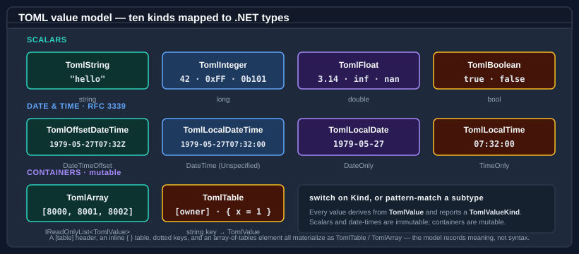

Core concepts
This page describes the vocabulary and member shape of Bodu.Text.Toml. The sibling libraries Bodu.Text.Bencode and Bodu.Text.Yaml share the same architecture — see the family introduction — so what you learn here transfers by swapping the Toml prefix.
Part of the Text & Serialization topic.
The serializer
The static TomlSerializer is the high-level entry point. Serialize<T> writes an object graph to TOML; Deserialize<T> binds TOML back to a type. Each has overloads over the format's natural surfaces:
Serializetostring/IBufferWriter<byte>(UTF-8), or to aStreamviaSerializeAsync.Deserialize<T>fromstring/ReadOnlySpan<byte>/Stream(withDeserializeAsync).
Options
TomlSerializerOptions configures the serializer. It holds the converter list (Converters), the property naming policy (PropertyNamingPolicy), PropertyNameCaseInsensitive, IncludeFields, the DefaultIgnoreCondition, the UnmappedMemberHandling and PreferredObjectCreationHandling policies, the SpecVersion, the ByteArrayHandling / DecimalHandling representation selectors, and the maximum depth (MaxDepth, default 64 — the public constant DefaultMaxDepth). Construct one from a TomlSerializerDefaults value to start from a scenario's conventions: General leaves member names unchanged and matches case-sensitively, while Web applies camel-case naming and case-insensitive matching.
An options instance becomes read-only the first time it is used — or eagerly via MakeReadOnly() — and then caches its resolved converters and type metadata. Configure one options object and reuse it across many operations.
Converters and resolution
A TomlConverter<T> converts one type, reading through the Utf8TomlReader (or the normalized TomlDocumentReader a converter receives) and writing through the Utf8TomlWriter. A TomlConverterFactory produces converters for a family of types (every Nullable<T>, every enum, every collection) — the same pattern the built-in converters use.
For a given type the serializer resolves a converter by checking, in order:
- a member-level converter attribute (
[Converter(typeof(…))]); - a type-level converter attribute;
- the first matching converter in
options.Converters; - the built-in converters.
The first match wins, and the result is cached on the options.
Attributes, callbacks, and naming policies
The full serialization surface lives in the Bodu.Text.Toml.Serialization namespace:
- Attributes —
[PropertyName],[Ignore],[Converter],[PropertyOrder],[Constructor],[Required],[Include],[ExtensionData],[NamingPolicy],[UnmappedMemberHandling],[ObjectCreationHandling],[StringEnumMemberName]. - Callbacks — the IOnSerializing / IOnSerialized / IOnDeserializing / IOnDeserialized interfaces, run at the matching point in the pipeline.
- Naming policies —
NamingPolicy.CamelCase,.SnakeCaseLower/.SnakeCaseUpper,.KebabCaseLower/.KebabCaseUpper, plus theTomlSerializerDefaults.Webpreset. - Enum converters — a string-enum converter (member names) and a number-enum converter.
The document object models
When you do not want a model, TOML offers two DOMs:
- Mutable — TomlNode /
TomlObject/TomlArray/TomlValue.Parsea document, index into it, mutate values, and write it back (ToUtf8Bytes()). - Read-only — TomlDocument /
TomlElement/TomlProperty. A low-allocation view over a parsed buffer, walked throughRootElement.
The low-level reader and writer
The Utf8TomlReader and Utf8TomlWriter are forward-only, allocation-free ref struct token machines. The reader exposes the current token through a TomlTokenType; the serializer and every converter are built on this pair. Reach for it directly when you want to process tokens without binding to a model.
There are in fact two readers, and they project the document differently:
- Utf8TomlReader is the source-order lexer. It follows the document's surface syntax: a
[server.tls]header surfaces as aTableHeadertoken followed by oneKeytoken per dotted segment, a key/value pair as itsKeysegments then the value's tokens, an inline table asStartInlineTable/EndInlineTable, and comments asCommenttokens. It validates lexical well-formedness only — UTF-8 validity, string termination and escapes, number and date-time grammar, newline discipline, the bracket-nesting bound, and the features gated bySpecVersion. Whole-document rules (duplicate keys, table redefinition, inline-table closedness) are not its job; those are enforced by the parsing entry points. - TomlDocumentReader is the normalized, structural cursor a converter receives. It collapses TOML's several ways of spelling a table — out-of-line
[table]and[[array-of-tables]]headers, dotted keys, inline{ … }tables — onto one uniformStartTable/PropertyName/ value /EndTable(andStartArray/EndArray) sequence, so a single read loop handles every spelling. An array-of-tables surfaces as aStartArraywhose elements are each aStartTable.
Both readers decode scalars during Read() (a malformed number or date-time throws from Read() even if the value is never requested) and expose CurrentDepth. The Utf8TomlReader additionally carries full position state — LineNumber, ColumnNumber, BytesConsumed, and TokenStartIndex as byte-true offsets into the UTF-8 source — and supports incremental parsing: construct it with isFinalBlock: false and a TomlReaderState, and when Read() returns false mid-token it rewinds wholly so the caller can resume over the next block carrying CurrentState.
The Utf8TomlWriter emits canonical, normalized TOML to an IBufferWriter<byte> or directly to a Stream (with Flush / Dispose). It writes a structural skeleton — WriteStartTable / WriteEndTable, WriteStartArray / WriteEndArray, WritePropertyName, and a typed Write* per value kind (WriteString, WriteInteger, WriteFloat, WriteBoolean, and one per date-time kind). Its output is valid under both spec versions, so it takes no version (the SpecVersion option on TomlWriterOptions is obsolete and ignored).
Value mapping

TOML maps the BCL types it can represent natively and rejects the rest unless a converter handles them:
string/char/Guid/Uri/Version→ string,TimeSpan→ the invariant"c"-format string, the integer family (including the 128-bit types within the i64 range) → integer,double/float/Half→ float,decimal→ float or a lossless string perDecimalHandling,bool→ boolean, andDateTimeOffset/DateTime/DateOnly/TimeOnly→ the four RFC 3339 date-time forms.byte[]and memory-of-byte → an integer array (or a Base64 string viaByteArrayHandling); enums → member-name strings; collections (including queues, stacks, and the concurrent collections) → arrays; dictionaries → tables in insertion order, with string, integer, enum,Guid,bool, orcharkeys.- An
object-typed member writes its runtime type and reads back as a TomlElement. The document root must be a table, so a top-level scalar or array throws; public fields participate viaIncludeFieldsor[Include].
The four date-time forms are distinct TomlValueKind members — OffsetDateTime, LocalDateTime, LocalDate, and LocalTime — and the mapping is kind-aware, not just type-aware:
| TOML value kind | .NET type | Notes |
|---|---|---|
OffsetDateTime |
DateTimeOffset |
An RFC 3339 instant carrying an explicit UTC offset. A DateTime with Kind of Utc or Local also writes here. |
LocalDateTime |
DateTime (Unspecified) |
A date-time with no offset or zone relation. |
LocalDate |
DateOnly |
A calendar date with no time-of-day. |
LocalTime |
TimeOnly |
A time of day with no date. |
Note
A TOML float is IEEE 754 binary64. double round-trips exactly (including inf / -inf / nan); float widens on write and narrows on read; Half widens exactly but narrows with IEEE 754 saturation, so an out-of-range finite float reads back as ±infinity rather than throwing. A TOML integer is signed 64-bit — a value outside that range (or outside the target .NET type) is a serialization error, including the 128-bit integer types whose magnitude exceeds the i64 range.
Errors
A malformed document raises TomlFormatException, which carries the line, column, and byte offset of the failure (LineNumber, ColumnNumber, Offset) — TOML files are edited by hand, so the position matters. A document that parses but cannot bind to your type — a type mismatch, a missing required member, a value the format cannot represent — raises TomlSerializationException. That exception also carries diagnostics: an optional Path (the member path to the offending value) alongside LineNumber / ColumnNumber / Offset where the position is known.
Where to go next
- Bodu.Text.Toml introduction — what is specific to TOML: the rich value model, spec versions, positioned diagnostics.
- Getting started — install and the first round trip.
- Using TOML — worked patterns: type mapping, spec-version selection, both DOMs, raw tokens.
- Bodu serializers introduction — the shared architecture across the three libraries.
- API reference — Bodu.Text.Toml.